Publication Design
The Imprint Yearbook
A collection of editorial design work created for The Imprint, exploring visual storytelling, typography, photography, and publication design.
My Role
Associate Editor-in-Chief & Graphic Design Editor
Tools
Adobe InDesign • Adobe Photoshop
Focus
Editorial Design • Layout • Photography • Visual Storytelling
About the Project
As Associate Editor-in-Chief and Graphic Design Editor, I helped develop the visual direction of the yearbook and designed page layouts throughout the publication. I worked with writers and photographers to create cohesive spreads that combined imagery, typography, and storytelling.
Selected Spreads

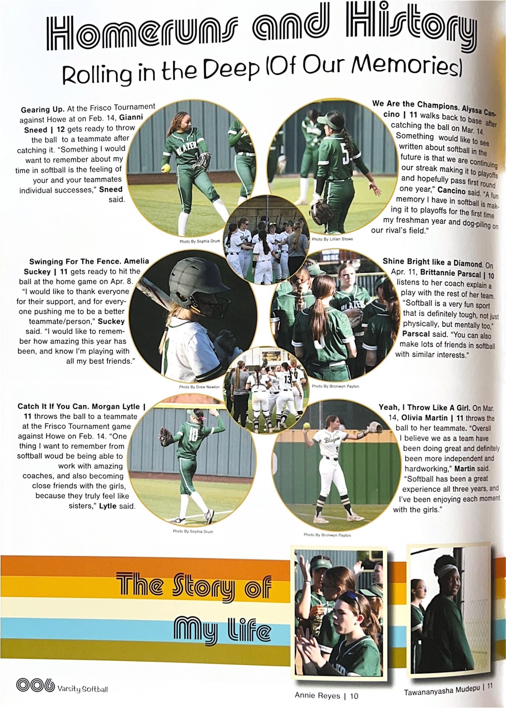
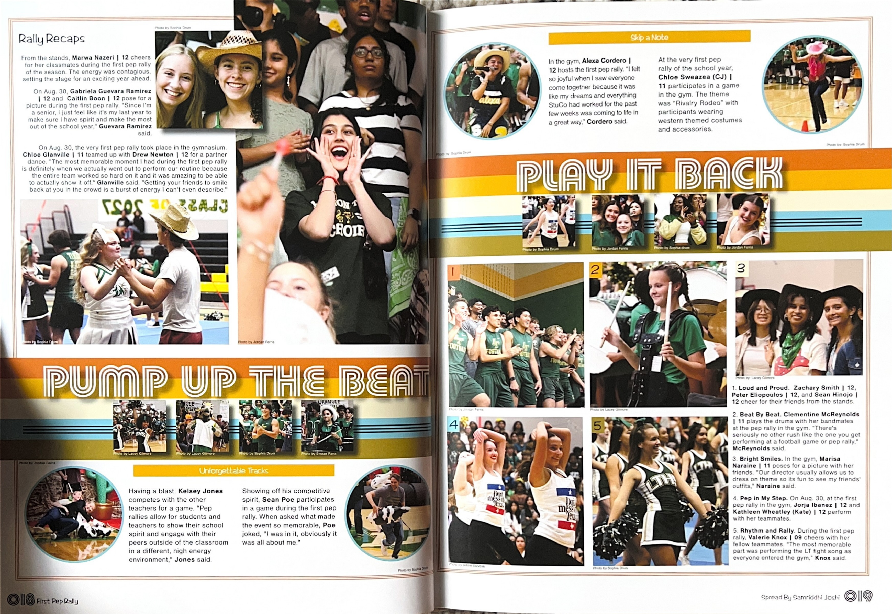
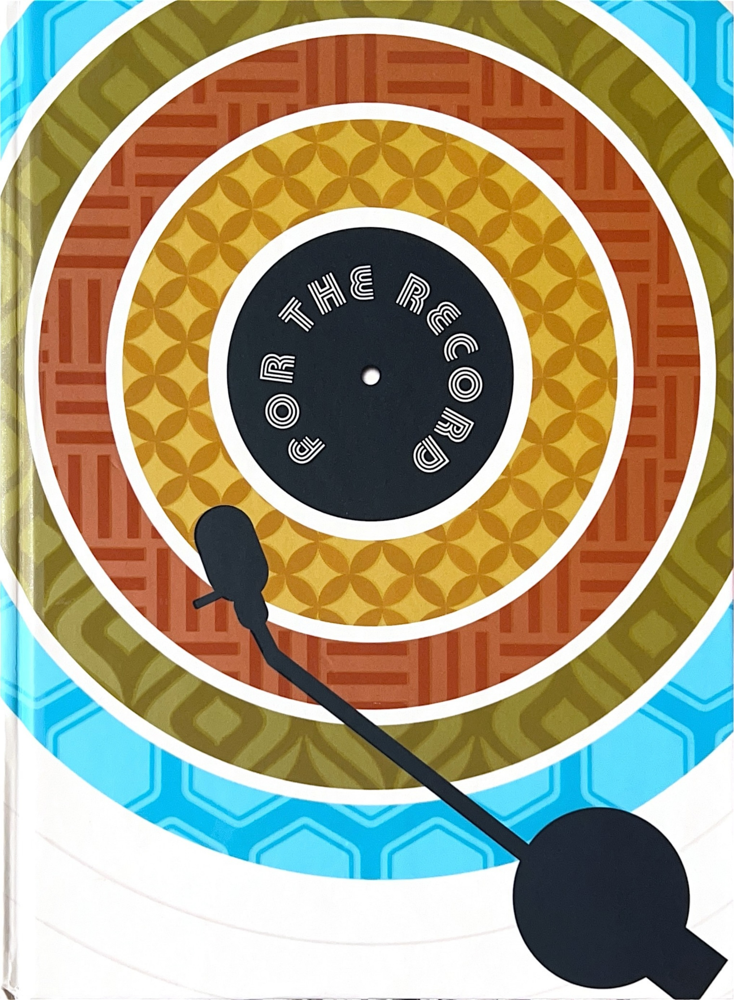
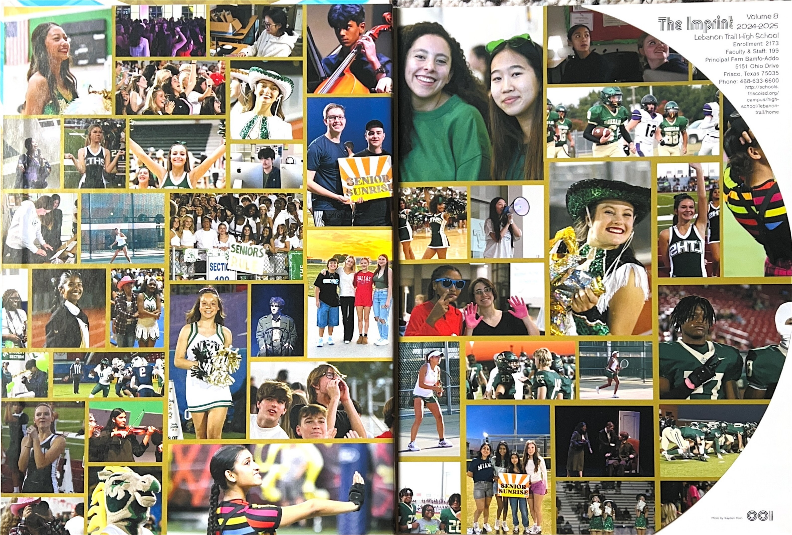
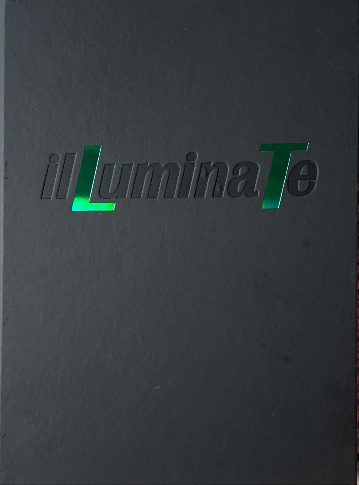
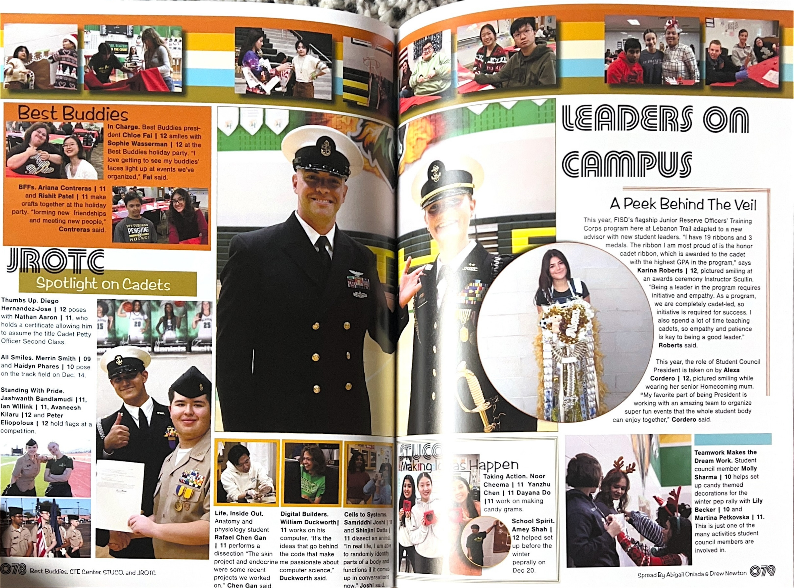
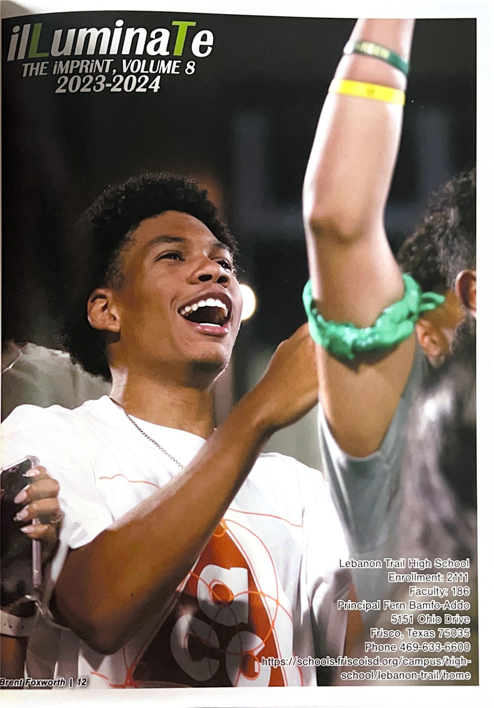
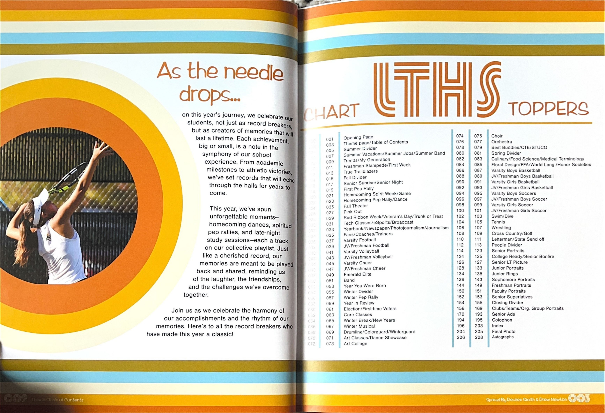
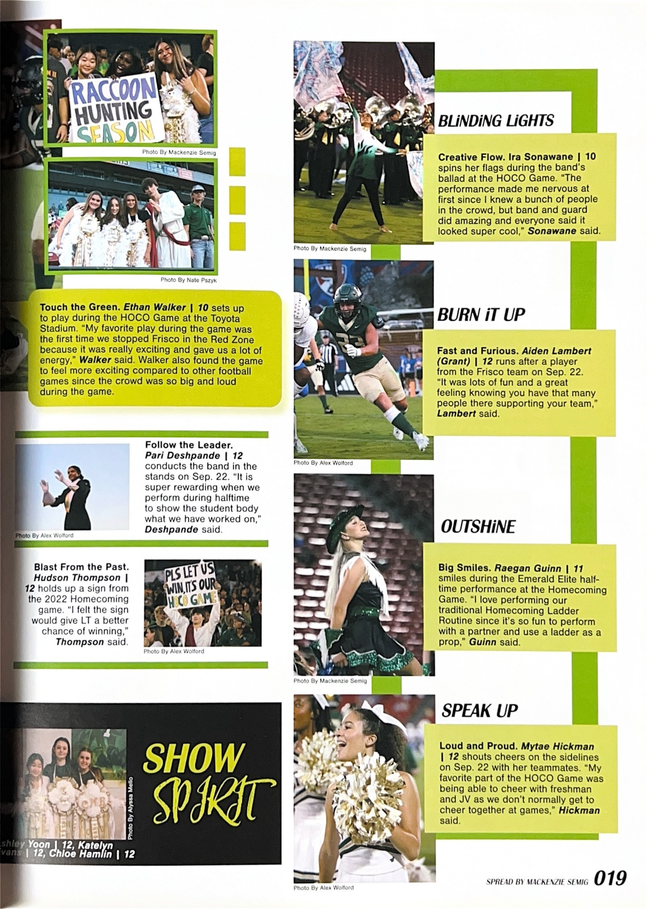
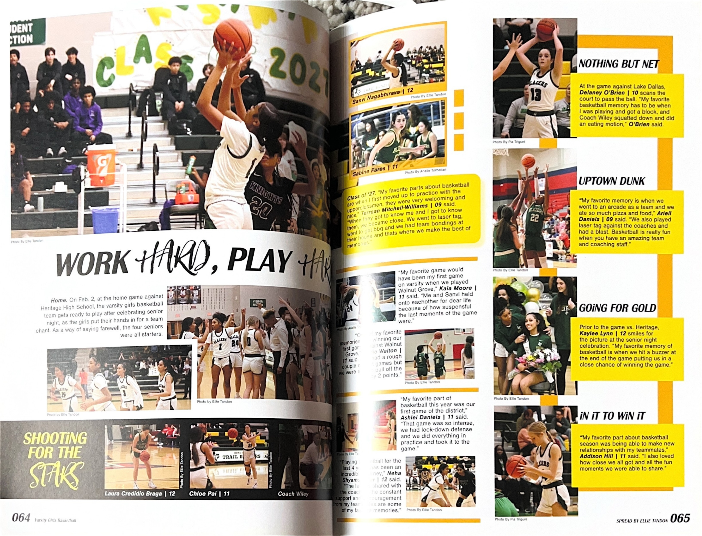
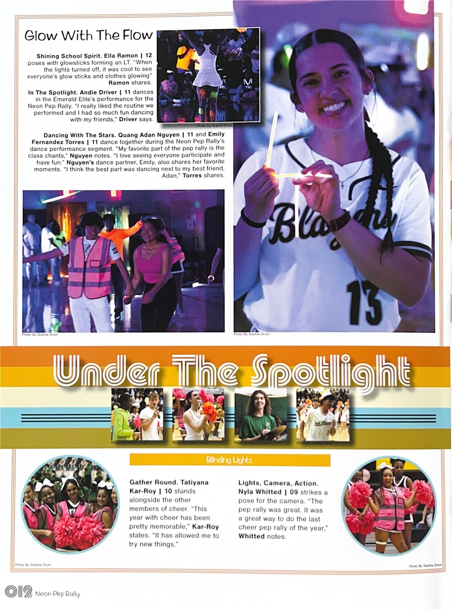
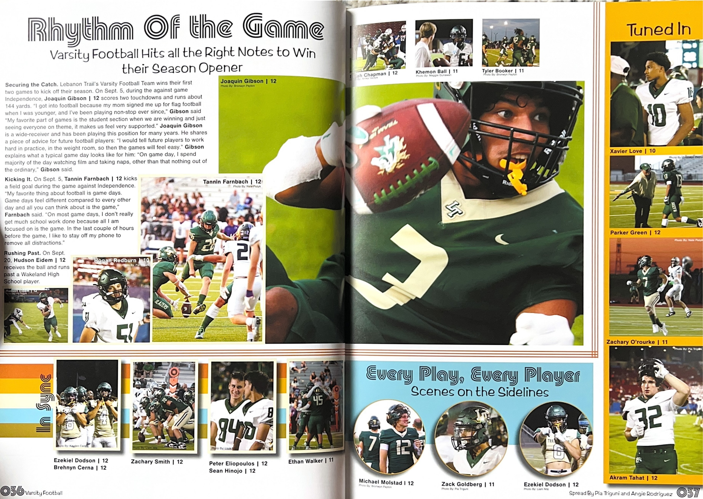
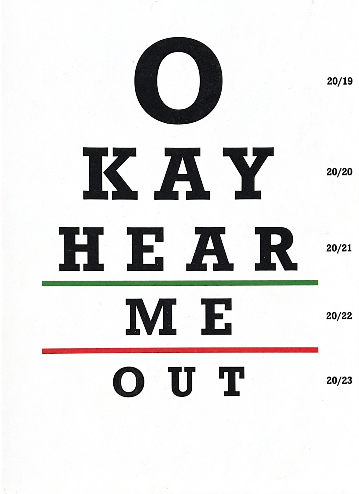